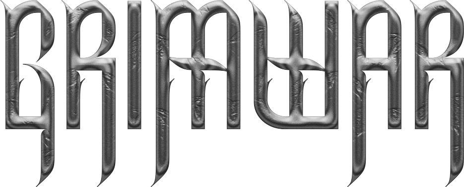
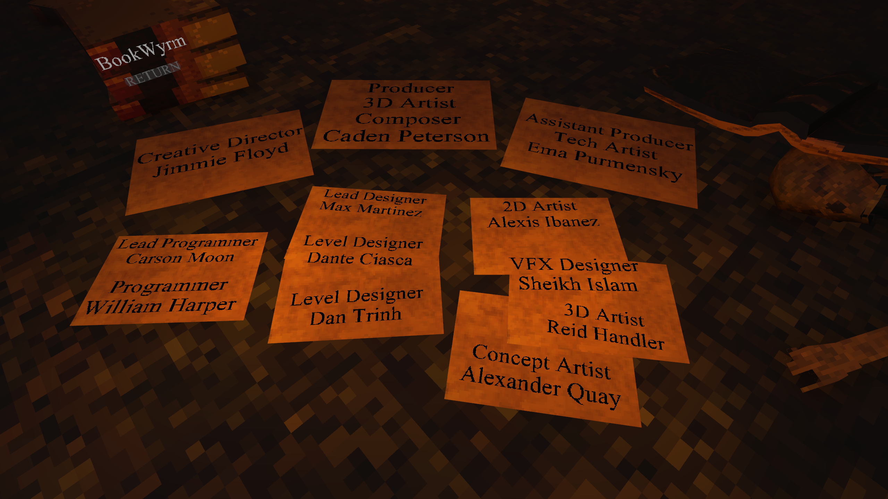

Ultra-fast FPS with intense combat and lots of skill expression.

BookWyrm (12 people)
August 2024 - May 2025
Lead Programmer
Unity
I touched every area of the game throughout GRIMWAR's development. Being the Lead Programmer, I was in charge of one other programmer and was responsible for managing the Github repository. Some examples of what I worked on include setting up sprints for the programmers, creating all major gameplay features, and integrating 3D art, 2D art, audio, and VFX into all aspects of the game.
Showcase of all spell abilities.
Showcase of enemy waypoint pathfinding.
Working on GRIMWAR taught me the importance of clean, readable classes. Its no fun rewriting what could have been written correctly the first time. Of course, I had experience in creating classes that were adaquetly separated between jobs, but I had never had to write this much code that another programmer was going to be consistently referencing. There were many instances that I neglected cleaning up a class before moving on to the next task. I have taken it to heart that someone else is always going to be trying to decipher my code, myself. :)
Project Management was not something that was new to me, however I was nowhere near an expert. I have always been the kind of person to start typing and ask important questions later. GRIMWAR was not a struggle in that regard because I was responsible for keeping another person on track as well as myself. Although I would say it was a success, I learned a lot in the way of making sure I was ahead of the curve when it came to having tasks on the board and future plans laid out in advance.
